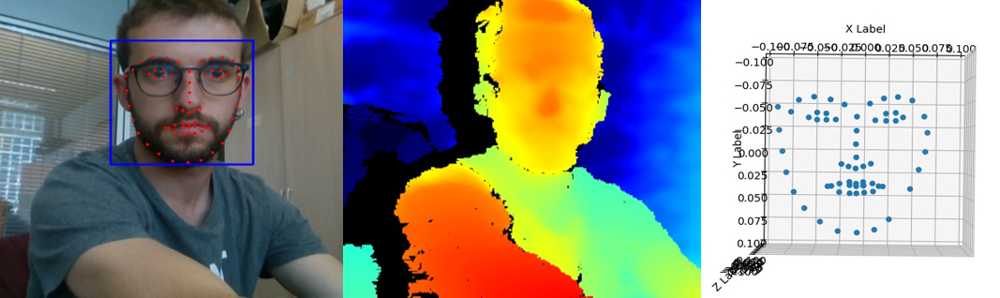

3D FACIAL LANDMARKS

Context:
La Salle - URL University research collaboration (4th grade)
Technologies:
Computer vision, Python, Intel RealSense depth camera
Description:
This project is based on the practical use of a depth camera, specifically the Intel Realsense D435 camera. Using this camera and computer vision techniques, the aim is to obtain a 3D representation of certain landmarks of a subject's face. The software developed in this project is intended to serve as a tool for obtaining data for other research medical projects.
This project allowed me to use computer vision techniques in a Python environment and to use libraries such as Dlib for the landmark recognition. It also gave me the opportunity to work in a university research team and use new technologies such as the Intel Realsense depth camera.